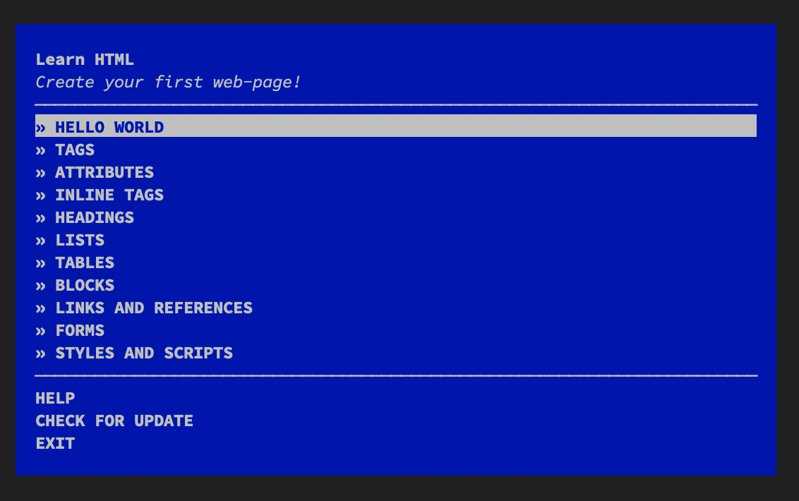

CS 253 Web Security
Assignment 0 – Web Programming Adventure ✈️
- Points: 60
- Due: Friday, October 4 at 5:00pm
Welcome to the first assignment for CS 253: Web Security. ✨
For this assignment, you're going to be completing several command-line workshops to ensure you're up-to-speed on the basics of HTML, JavaScript, and Node.js. The HTML and JavaScript material should be review from CS 142, while the Node.js material may be a more bit challenging.
Prepare
Install Node.js and npm
Install Node.js, a popular JavaScript runtime. Choose Node.js 12.
Node.js is a program that you install on your computer. With Node.js you can use the very popular programming language JavaScript to write software. JavaScript is usually used in a browser like Chrome or Firefox but with Node.js it is possible to do a lot more. Combined with other tools, Node.js allows you to write Desktop applications like Word or iTunes, Server applications like Apache, Network applications like Curl or even mobile applications for the iPhone or Android.
Confirm that Node.js was installed. Open your terminal and run this command:
node --versionNode.js comes bundled with npm, a package manager for installing Node.js packages.
Confirm that it was installed:
npm --versionIf you have trouble getting Node.js installed, please come to office hours or post in Piazza.
Get the starter code
Run this command to clone the code with git:
git clone https://github.com/stanford-web-security/assign0.gitEnter the folder you just created:
cd assign0Install the necessary local dependencies with npm:
npm installInstall the workshops you will be completing globally with this command:
npm install -g learnyouhtml javascripting learnyounodeThe -g option installs these packages globally so that you can run them as a command in your terminal. After running this command, you'll have three new programs you can run from your terminal: learnyouhtml, javascripting, and learnyounode. We installed them this way so they would be easier to run since you're going to be running these commands a lot for this assignment.
If the command fails with a permissions error, you likely do not have permission to modify the /usr/local system folder. The easiest fix is to rerun the above command with sudo prepended.
To remove the global packages when you're finished with the assignment, just run:
npm rm -g learnyouhtml javascripting learnyounode(If you'd prefer to avoid global installation, you can download and run these commands on a one-off basis with e.g. npx learnyouhtml instead.)
Use StandardJS code style
All the code you write for CS 253 must pass the StandardJS linter. StandardJS enforces code quality, consistency, and catches several types of programmer errors.
You can check your code by running:
npm run lintIf no errors are printed by this command then no code style errors or programmer errors were detected.
If you have errors, you can automatically fix them most of the time by running:
npm run lint-fixNow, let's start the assignment. I hope you're ready! üòÅ
Part 1 – Learn You The HTML For Much Win! (11 points, 1 per exercise)
Run the following command:
learnyouhtmlYou'll see the menu:

Navigate the menu with the up & down arrow keys. Choose a challenge by hitting enter.
Whenever an exercise tells you to create a file, you should use the files we've already created for you in the src/ folder. For example, the first file you need to edit is src/learnyouhtml/index.html.
IMPORTANT: Use a separate file for each exercise! We have provided you with a separate file to use for each exercise.
You can use any text editor you like to, whether it's vim or emacs or even a visual editor like Sublime Text or VS Code.
Complete all the exercises. There are 11 in total.
It's easiest if you switch into the src/learnyouhtml folder and do your work in there. Here's an example:
cd src/learnyouhtml
learnyouhtml # select an exercise to complete
vim index.html # edit the file in your editor of choice
learnyouhtml verify index.html # check that you did it correctly!If you get stuck, the web is your friend! You can quickly search for a topic and quickly refresh your memory. A good trick is to search for a concept along with the abbreviation "mdn", short for Mozilla Developer Network which is the best web resource for HTML and JavaScript APIs. So, for example if you want a refresher on how <script> tags work, you could search for "script mdn".
When you're finished with all the exercises, your src/learnyouhtml folder should have 11 complete .html files. Nice work!
When you're ready, go on to the next part.
Part 2 – JavaScripting Adventure! (20 points, 1 per exercise)
Run the following command:
javascriptingYou'll see the menu:
Complete all the exercises. There are 20 in total.
It's easiest if you switch into the src/javascripting folder and do your work in there. Here's an example:
cd src/javascripting
javascripting # select an exercise to complete
vim introduction.js # edit the first file in your editor of choice
javascripting verify introduction.js # check that you did it correctly!When you're finished with all the exercises, go on to the next part.
Part 3 – Learn You The Node.js For Much Win! (26 points, 2 per exercise)
Run the following command:
learnyounodeYou'll see the menu:
Complete all the exercises. There are 13 in total.
Unlike Part 1 and Part 2, this part is likely to contain new material that you might not be familiar with. It is expected that you'll read the Node.js documentation, do web searches, and come to office hours if you're stuck. In the real world, programmers often have to learn topics quickly in a just-in-time manner to solve problems they encounter. This is good practice! If you get stuck, come to office hours or post in Piazza.
It's easiest if you switch into the src/learnyounode folder and do your work in there. Here's an example:
cd src/learnyounode
learnyounode # select an exercise to complete
vim hello-world.js # edit the first file in your editor of choice
learnyounode verify hello-world.js # check that you did it correctly!When you're finished with all the exercises, go on to the next part.
Part 4 – Survey (3 points)
Your feedback matters a lot! This is a brand new course, so please help us improve by answering the survey questions in src/SURVEY.md. As a reward, enjoy some easy points!
Submit
Before you submit
Ensure that the sanity tests pass:
npm testThis command just runs a basic sanity test that ensures your project passes npm run lint, has the right folder structure, and doesn't have any blank required files. If npm test doesn't report any errors that doesn't necessarily mean that you've solved every exercise perfectly!
üåü PRO TIP: You can automatically fix most lint errors by running:
npm run lint-fixGradescope
We use Gradescope for submissions. Enroll with the code 97BGZB.
The moment of truth
When you're ready to submit your work, you'll upload the src/ folder to Gradescope.
You should submit early and often! There's no downside to repeatedly submitting your assignment.
Questions?
Come to office hours or post in Piazza.